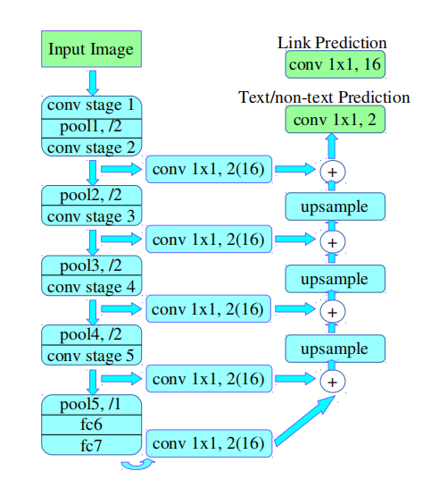
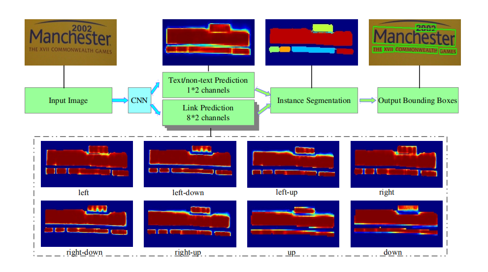
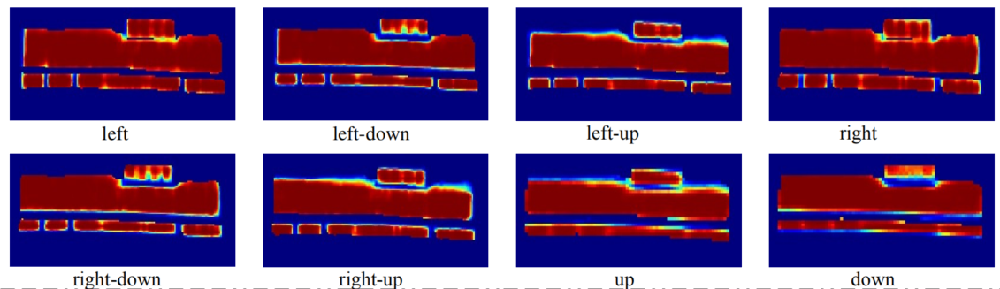
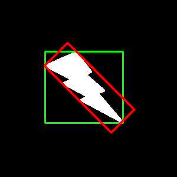

重点模型¶
首先将相同实例中的正像素通过正链接连在一起，然后来分割出来，最后直接从分割结果中提取文本边界框，不需要外置回归。
二. 网络结构：¶
上图是Pixel link 网络结构示意图
论文中给出了两种网络结构：
PixelLink+VGG16 2s：其融合的特征层包括，{conv2_2, conv3_3, conv4_3, conv5_3, fc_7}，得到的特征图分辨率为原图的 二分之一；PixelLink+VGG16 4s：其融合的特征层包括，{conv3_3,conv4_3, conv5_3, fc_7}，得到的特征图分辨率为原图的 四分之一。
整个实现过程包括两部分：先通过深度学习网络预测 pixel positive 和 link positive，并根据 link positive 连接 pixel positive 得到 文本实例分割图，然后从分割图中直接提取文本行的 bbox。具体步骤如下：
对输入图片进行特征提取：主干网络沿用了 SSD 网络结构，以 VGG16 作为基础网络，并将 VGG16 的最后两个全连接层改成 卷积层；提取不同层的特征图：对于 PixelLink+VGG16 2s 网络结构：提取了conv2_2, conv3_3, conv4_3, conv5_3, fc_7；对提取后的特征层采用自顶向下的方法进行融合：融合操作包括先向 上采样，然后再进行 add操作；获得网络输出进行实力分割：包括 文本/非文本预测和Link预测，对应输出个数为 2 和 16。
三. 重点实现：¶
上图是Pixel Link模型结构示意图
具体实现步骤如下：
训练 CNN 模型进行 文本/非文本预测和链接预测。
经过阈值处理后，用 并查集 方式，将正像素通过正链接连接在一起，实现实例分割。
应用 MinAreaRect 直接从分割结果中提取边界框。
后处理通过 噪声滤波 筛选需要的文本框
1. 连接像素(Linking Pixels Together)¶
上图是 PixelLink 体系结构中链路预测的热力图，代表 8 个方向的链路预测。
连接像素的步骤如下：
设定阈值(代码中为0.5）得到 pixel positive 集合和 link positive 集合。
根据 link positive 将 pixel positive 进行连接，得到CCs(conected compoents)集合。
根据集合得出分割的实例块，集合中的每个元素代表的就是文本实例。
连接规则：
给定两个相邻的 pixel positive，它们之间的 link 预测是由当前 两个 pixel 共同决定 的。
两个 pixel 连接 (即两个像素属于同一个文本实例) 的前提条件：two link 中至少有一个 link positive。
对于在文本/非文本预测中很难区分的文本，通过链接预测可以区分开。
2. 提取文本行的 bounding box（Extraction of Bounding Boxes）¶
提取文本框步骤： 基于上述分割的结果，直接通过 opencv 的 MinAreaRext 提取文本的带方向信息的外接矩形框(即带角度信息)。矩形框的格式为((x,y),(w,h),θ)，分别表示 中心点坐标，当前bbox的宽和高，旋转角度。
MinAreaRext方法：
上图表示的是 MinAreaRect 方法， 从图中可以看出此方法在得到的是图形的最小外接四边形。
PxielLink 和 SegLink 的区别在于：PixelLink 是直接从分割结果中提取 bbox，而 SegLink 采用的是边框回归。
3. 实例分割的后处理（Post Filtering after Segmentation）¶
进行后处理的原因是在 pixel 进行连接的时候会引入噪声。
通过统计训练集中样本的情况，得到 95% 概率以上的共有特征，根据此几何特征制定筛选规则。
利用筛选规则对已检测到的 bbox 进行判断筛选，最终提高 文本检测 的准确率。
三. 训练技巧：¶
总损失函数：
1. 实例平衡交叉熵损失（Instance-Balanced Cross-Entropy Loss）¶
平衡 不同大小的文本检测框 对损失函数的影响。
2. 在线困难样本挖掘 （Online Hard Example Mining）¶
平衡 正负样本数量 不同对于训练过程中分类效果的影响。